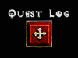

The Quest Log button pops up in the lower left corner of the screen when the state of a quest
changes. Click on it to bring up the Quest Log and review any quests.
The Quest Log button always appears when beginning or completing a quest. Some quests are given
by NPCs. If you encounter a quest-related
item or location before receiving the quest from an NPC normally, then the quest begins. If it is
too hard, you can play elsewhere and return later to finish it.
Quests are the same for both single-player and multiplayer games.
Once a quest has been initialized, it (and any of its associated items in the player's inventory)
are saved. When you create a new game, all quests are set to where you left off.
You cannot use quest items from previous difficulty levels to complete quests in later difficulty levels. Exception:
Horadric Cube.
The final quest in each Act must be completed to advance to the next Act.
Town Portal Restrictions
You cannot enter Town Portals cast by other players in areas
beyond the "blocking quests" without having completed those quests:
e.g., Canyon of the Magi/Seven Tombs/Duriel's Lair (The Summoner), The
Harem/Palace Basement/Arcane Sanctuary (The Tainted Sun), Durance of
Hate (The Blackened Temple), The Worldstone Keep (The Ancients), The
Secret Cow Level (Terror's End in DII classic or Eve of Destruction in
DII: LoD). NOTE: A player who kills the High Council (but doesn't use
Khalim's Will to smash the Compelling Orb), may take a Town Portal into
the Durance of Hate.
This is to prevent higher level players from helping lower level players to advance further in the game
without working for it. If a player is unable to enter a portal, this means they need to complete a quest.
Quest Rewards
All quests give rewards. Once you have completed a quest be sure to return to see
the person who gave the quest for the reward. Check your quest log after you complete
a quest for details. It's easy to forget to get a reward after you finish a quest but try
not to forget because many rewards can really help out your character.
[Learn more]
Quests in Multiplayer Games
All of the single-player quests in Diablo II are available in multiplayer too. There are,
however, some rules that you should be aware of when questing in multiplayer games.
- When you join a game, only those quests that the game's creator has not yet solved are available. If you wish to complete earlier quests, you must join another game or create your own.
- When in a party, your party members may complete quests, even when you are not in the immediate vicinity. When one member of a party completes a quest, that quest is completed for all members of that party, each of whom may share in the reward for it. You must be within the same Act as the members of your party to share in the completion of the quest.
- Even if you are not in a party, you are notified when other players have completed quests. When other players complete quests in your game, those quests become unavailable to you until you leave and start a new game.
- Act Bosses have a high chance of dropping very good items such as rares, uniques and set items the first time you kill them.
- The difficulty level in the game increases with each person who joins the game. A game with two adventurers is much easier than a game with five, and players will have to work together to complete quests. However, the rewards in experience and treasure are richer as well.
Typing "/players X", where X is a number between the current number of players and the maximum (8), in the
message box will set the effective number of players in the game (in single player, open Battle.net and
TCP/IP games only).
Online Privacy Policy
Battle.net Terms of Use Agreement
©2019 Blizzard Entertainment. All rights reserved.